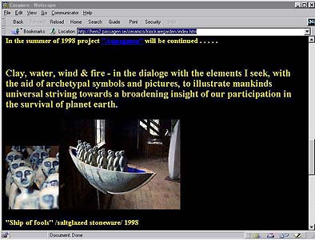

isse Holmström worked for ten years as a ceramic engineer calculating glazes, as he says "using molecular weights with three decimal points; weighing out percentage-recepies with two decimal points; calculating glaze bubbles in microns and lead-release in ppm´s. Then ten years of designing, building and stoking wood-fired kilns for saltglazing, in search of a palette of my own". Nisse has now embarked on a new project -- a grand modification of the traditional anagama kilns, incorporating water into the firing technique -- 'Aquagama'. Thus the creating process utilizes earth (clay), air (combustion), fire (wood) and water. Through the introduction of water, more oxygen can be introduced into the reduction atmosphere, giving a cleaner 'burn'. Nisse also states that "water-vapour in the kiln atmosphere will undoubtedly lead to a substantial lowering of the viscosity of glazes and liquid phases - hence give a noticeable lowering of the sintering- and/or maturing temperature of most ceramic compositions".
 Nisse started his ceramic career as an apprentice to Gunnar Nylund, a ceramic designer and sculptor. He recieved his formal ceramic training in England at the North Staffordshire Polytechnic, Stoke-on-Trent (1971 - 1975) and in the US at MIT, Boston and Rutgers University, New Brunswick (1977 - 1979). He worked in the laboratory- and studio departments of Rörstrand Ltd, the largest Swedish ceramic tableware-manufacturer for ten years before he set up his own studio together with his wife Suzanne Öhlen in 1986. They both work full-time as ceramic artists.
Most of Nisse's work is woodfired, (saltglazed) stoneware; utilitarian ware, plus tiles for floors, walls and murals, but also sculptural work.
I am indebted to Nisse Holmström for his notes o the subject.